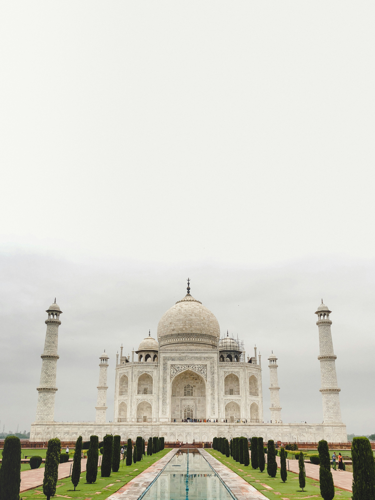
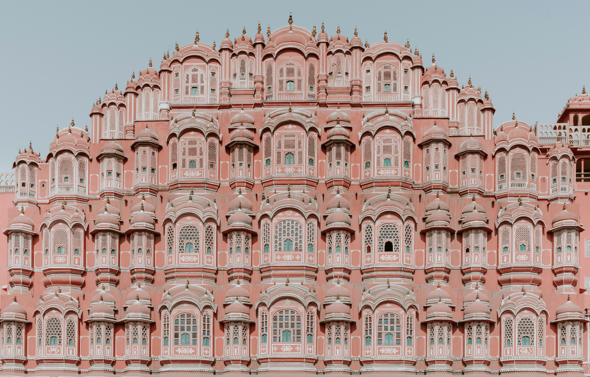
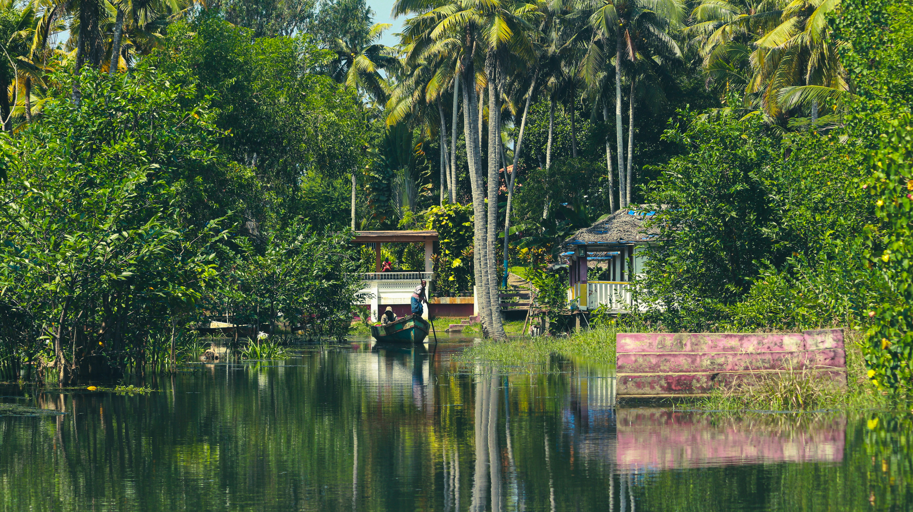
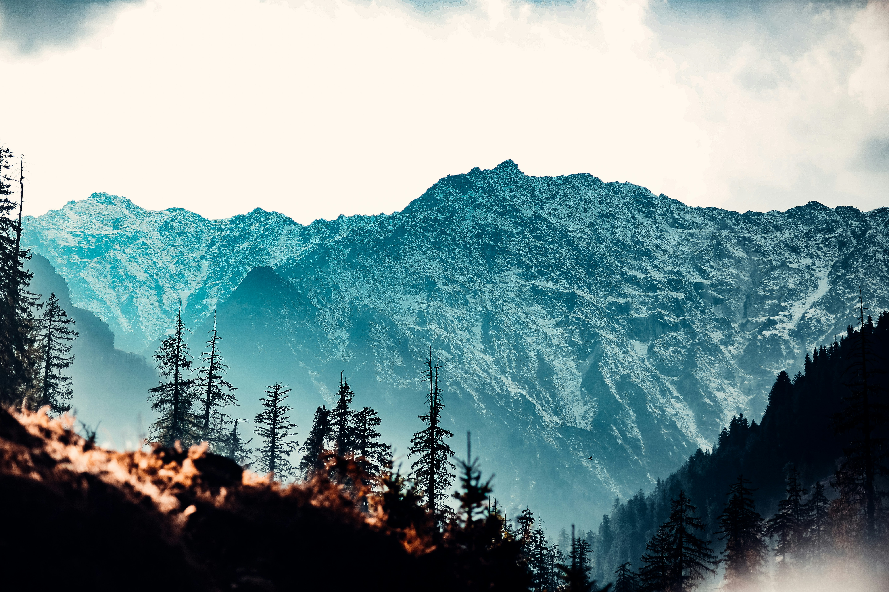
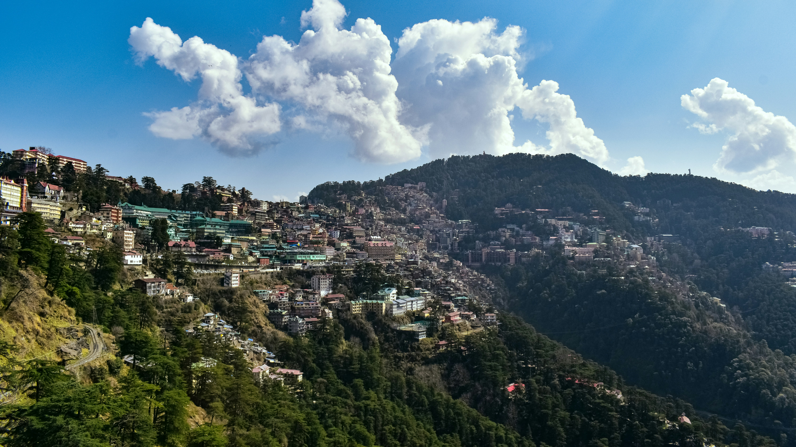
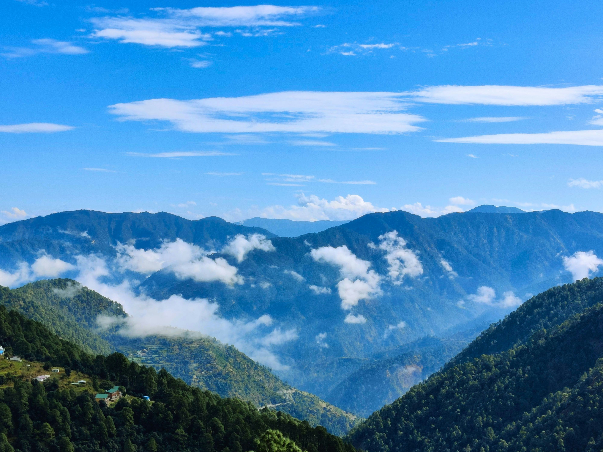

DISCOVER • EXPERIENCE • WANDER
India, one story
at a time.
From sacred cities and royal palaces to misty mountains and peaceful backwaters — discover places that stay with you long after the journey ends.
SCROLL TO EXPLORE
28+places to discover
THE WANDERINDIA JOURNEY
India is not just a destination.
It's a story waiting to be lived.
WanderIndia brings together heritage, spirituality, nature and adventure in one thoughtful travel experience — helping curious travellers find their next unforgettable place.
01Curated places
Handpicked destinations worth slowing down for.
02Local stories
Go beyond photographs and discover the meaning behind each place.
03Simple planning
Useful travel context without overwhelming you.
EXPLORE INDIA
Places worth
Places worth
remembering.
Start with India's iconic landmarks, peaceful escapes and sacred destinations.







CHOOSE YOUR MOODTravel the way
Travel the way
you feel.
Whether you want stillness, history or a little adrenaline, there is an India waiting for you.

FEATURED STORYSome places are
Some places are
felt, not visited.
Take the slower route through India's sacred heartland. Discover the places, people and traditions that give a journey its meaning.
Explore spiritual India ↗YOUR NEXT STORYWhere will you
Where will you
wander next?
Have a destination in mind or a story to share? We'd love to hear from you.
Say hello →